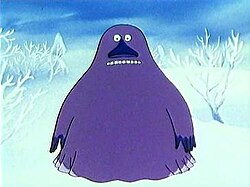
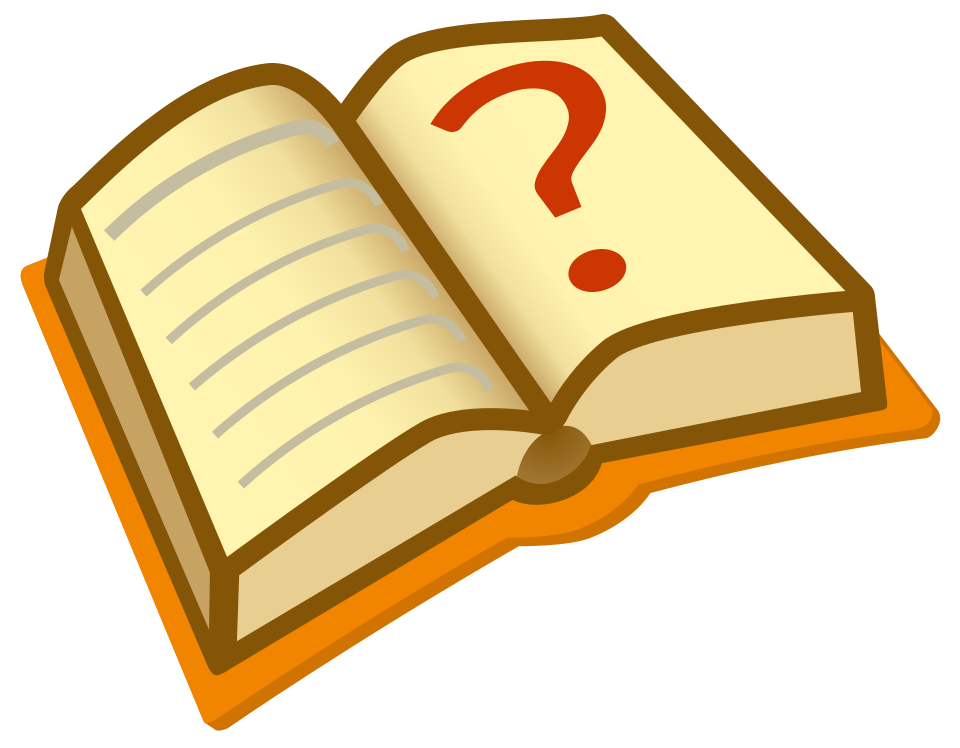

The Groke
| The Groke | |
|---|---|
| Moomins character | |
|

The Groke, as depicted in the 1990 Japanese–Dutch animated TV-series
Moomin.
|
|
|
First appearance
|
Finn Family Moomintroll |
|
Last appearance
|
Moominpappa at Sea |
| Created by | Tove Jansson |
| In-universe information | |
| Gender | Female |


This article needs more citations. Please help improve this article by adding citations to reliable sources. Unsourced material may be challenged and removed.
Find sources: "The Groke" – news · newspapers · books · scholar · JSTOR (January 2025) (Learn how and when to remove this message)
The Groke (Swedish: Mårran, Finnish: Mörkö) is a fictional character in the Moomin stories created by Swedish-speaking Finnish author Tove Jansson.[1] The Groke is a melancholic and lonely character.[2] She appears as a big dark sheet ghost with a big nose, who passively freezes everything around her.
Description
This section does not cite any sources. Please help improve this article by adding citations to reliable sources. Unsourced material may be challenged and removed.
Find sources: "The Groke" – news · newspapers · books · scholar · JSTOR (January 2025) (Learn how and when to remove this message)
The Groke appears as a sheet ghost-like, hill-shaped body with two cold staring eyes and a wide row of white shiny teeth beneath a large and wide triangular nose. In the book Who Will Comfort Toffle?, it is mentioned that she has a tail, but it has never been seen. Wherever she stands, the ground below her freezes, plants and grass die and if she stands in place too long the soil itself will die and nothing will ever grow there again. She leaves a trace of ice and snow when she walks the ground. Anything that she touches will freeze. On one occasion, she froze a campfire by sitting down on it, and she is even noted to make people cold by her stare. She seeks friendship and warmth, but she is declined by everyone and everything, leaving her in her cold cavern on top of the Lonely Mountains.
On one occasion in a comic, however, she was hailed as a heroine when she, in her constant search for warmth, extinguished a forest wildfire by sitting on it. In another comic, Sniff has made a magical potion with seemingly random effects. In curiosity, he drips a few drops on an ant which then transforms into the Groke. It is never made clear if this is how the Groke came to be, or if the ant transformed to another creature of the same type. In her debut story, Finn Family Moomintroll, she is mistreated, when two small characters, Thingumy and Bob, steal one of her possessions. When she comes after them, they hide with the Moomin family, and refuse to give up the stolen goods. However, when she arrives at the Moomin house, she eventually trades the stolen goods for the Hogoblins hat.
The Groke rarely shows any fear, as everyone around is afraid of her, but in one instance, when she wants to ride a horse made of snow, Moomin tells her it is for The Lady of the Cold, a personification of winter and coldness, who freezes all that she sees. The Groke then quickly withdraws from the scene, indicating that not even she can withstand the personification of winter. In the story "Who Will Comfort Toffle?", she is also shown to be sensitive to pain, when her shin is bitten by the protagonist and she flees the scene in a haste.
Appearances
- Finn Family Moomintroll – This is the first appearance of the Groke, and she is generally played as a frightening villain, though Sniff expresses a bit of sympathy for her, at one point moving himself to tears with a speech on how awful it must be to be so alone.
- The Exploits of Moominpappa – Here, several characters refer to the Groke eating people: the Joxter claims to have a cousin who was eaten by the Groke, and the young Moominpappa saves the Hemulen's Aunt from being eaten by the Groke. She is never actually seen to eat anyone, though, and since the book is written as Moominpappa's memoirs, it's quite possible (and quite in character) that he exaggerated things a little in order to make himself look more heroic.
- Moominland Midwinter – The Groke makes a couple of cameo appearances, though she comes across as far less villainous and more to be pitied than feared. Too-Ticky even expresses sympathy for her when she wants to warm herself by the fire at the celebration for the sun, and ends up not only scaring everyone away but inadvertently putting out the fire with her own coldness.
- Moominpappa at Sea – In this work, the Groke keeps on going to Moominpappa's island to beg Moomintroll to show her his lantern flame. This story builds on the new angle of the Groke that Too-Ticky offered in Moominland Midwinter, and is generally seen as the most sympathetic portrayal of her in the books, even containing short passages written from her point of view: constantly craving warmth and light but unable to get either.
- Who Will Comfort Toffle? – Toffle bites her as he is saving Miffle, though it is not known whether she was holding Miffle hostage or not.
- Comic strips – While the Groke is not a major character in the strips, she is alluded to several times. The second storyline in the strip, Moomin and the Brigands, features Sniff creating an “Elixir of Life”, which is revealed to turn things into their opposites. After accidentally dumping the potion on a bug, the bug is transformed into a creature resembling the Groke, who chases Sniff before being (presumably) drowned.
Adaptations
This section does not cite any sources. Please help improve this article by adding citations to reliable sources. Unsourced material may be challenged and removed.
Find sources: "The Groke" – news · newspapers · books · scholar · JSTOR (January 2025) (Learn how and when to remove this message)
There have been various adaptations of the Moomin books on television. The Groke appears differently in the 1969 anime version of the Moomins, where she is depicted as white and depressed. In the Polish Moomin TV series, she is more like the character in the novels, but darker and bestial.
The Japanese-Dutch anime series Moomin includes her as an antagonist. In the Japanese dub, she is referred to as Morran, mirroring her original Swedish name Mårran. She is distinctive from her first appearance in the series for her intimidating appearance and the loud growling sounds that she utters. Dubs in other languages use different growls. The Groke's primary introductions were in episode 6, 7 and 22 of the series. It was not until episode 37 that she was presented more sympathetically.
She also appears in the episode "Night of the Groke" in the 2019 series, in which she make a ghostly moaning sound as she slowly slides along, leaving an ice trail behind her as she searches for fire. She is first encountered by Moomintroll, Snufkin, and Sniff, who manage to escape her. Afterwards, the Groke attempts to head to Moominpappa and Moominmamma’s tent, in which they have a fire. Sniff manages to resist his greed and uses a large sheet of ice to put out the fire, but Moomintroll begins feeling sorry for the Groke and leads her out to sea via placing two lanterns on a log. The Groke appears again in the episode "Song of the Groke".
External links
Notes
- Nicci Gerrard (15 July 2001). "Return to the Moominvalley | Books". The Observer. Guardian.co.uk. Retrieved 2015-03-27.
- Rehal-Johansson 2006, pp. 154–156
- Jones 1984, pp. 20–21
References
- Jones, W. Glyn (1984). Vägen från Muminsalen (in Swedish). Hangö: Bonniers. p. 68. ISBN 91-0-046191-1
- Rehal-Johansson, Agneta (2007). "Tove Jansson: The Trickster Children's Author". In McLoughlin, Kate; Brock, Malin Lidström (eds.). Tove Jansson Rediscovered. Cambridge Scholars Publishing. ISBN 978-1-84718-269-2
- Rehal-Johansson, Karin (2006). Den lömska barnboksförfattaren : Tove Jansson och muminverkets metamorfoser (in Swedish). Makadam. ISBN 9789170610332
| Moomins | |
|---|---|
| Novels | |
| Picture books | |
| Characters | |
| Television series | |
| Films | |
| Video games | |
| People | |
| Other | |